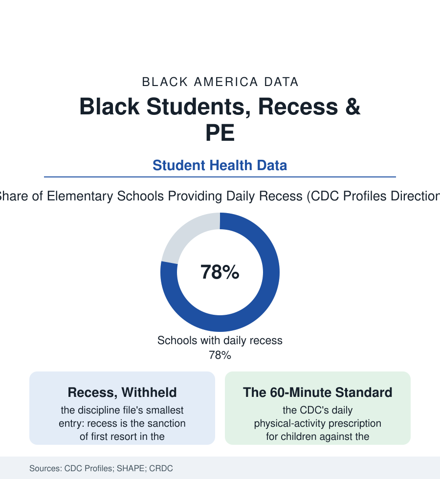

Black Education
The Recess File: Play, PE, and the Minutes Schools Cut First
Recess and physical education are scheduled, measured, and unequally distributed — the schools serving the most Black children offer the least of both in the federal data. The recess file.

The school day contains a curriculum no one grades: the running, climbing, and negotiating of recess, and the structured exertion of physical education. Both are measured — the CDC's school health profiles count the minutes and the days per state and district — and both are distributed the way this atlas would predict: the schools serving the most Black and low-income children provide the least recess and the thinnest PE in the federal data. This article reads the recess file. It is the smallest file in this section, and for the children living it, very possibly the largest.
The Minutes and Where They Went
The erosion is documented across the accountability era: recess compressed as elementary schedules were rebuilt around tested minutes (the surveys of the 2000s recording daily recess — near-universal a generation earlier — retreating to state-by-state and district-by-district option, the twenty-minute remnant scheduled at the cafeteria's convenience), and PE thinned to a weekly period or less in the median elementary school of the profiles (the specialist-taught, daily PE of the standards existing, in the data, mainly in the affluent districts — the PE teacher herself a staffing line the funding file explains). The distribution's fine print rewards attention: recess survives better, the research finds, where state law mandates it (a dozen-plus states now carrying recess statutes — among them, instructively, Southern states whose Black legislators wrote the bills from their own districts' deficits), and disappears entirely from some middle schools in the profiles, the age of the student treated as the expiration of the body's claim on the day. The withheld-recess rows are the file's discipline datum: the teacher surveys placing recess among the first sanctions for classroom behavior in the elementary grades — its withdrawal falling, per the discipline file's every pattern, on the boys and the Black children most often — a practice the pediatric guidance now argues against in terms of simple behavioral arithmetic (the withheld recess manufacturing the afternoon it punishes). The facilities census completes the physical picture: the playgrounds' and gymnasiums' conditions in the GAO's school-facilities reporting, sorted by the district's wealth as the roofs and the boilers were — the play environment itself a capital-budget datum.
What the Body's Hour Buys
The case for the minutes is written in the adjacent files' own data: the activity rows of the obesity file (the CDC's sixty-minute standard met by a minority of children in the youth surveys — Black girls' rates among the lowest, the school day the one guaranteed venue the public controls), the attention and behavior research (the recess-before-lunch and activity-break experiments' classroom dividends, the teachers of the intervention studies reporting the afternoon gains the testing era claimed to be buying with the same minutes), the social curriculum the developmental literature measures in the unstructured hour (negotiation, rule-invention, conflict's self-resolution — the competencies the structured day cannot teach, whose recession the child-development surveys correlate, cautiously, with the era's other curves). The restoration movement in the current data is policy-shaped: the state recess laws' spread, the districts rebuilding PE staffing under the wellness rubrics, the play-equity organizations publishing the minutes by school with the same technique as the funding file's atlases — the recess map made visible being, as ever in this atlas, the first move. The file's closing datum is its simplest: the body was in the curriculum before the tests were; the minutes were cut from the children with the least play infrastructure at home — the apartment file's courtyards, the parks file's maintenance budgets — by a scheduling logic that called the cut rigor. The CDC counts the minutes. The children, who have always known exactly how many there are, could have filed the report from memory.
Reading the Recess Data
Recess is where the education file's abstractions become a child's afternoon: twenty minutes, or ten, or none — assigned by the same budgets and beliefs as everything else in this section, and recorded with the same fidelity. Its restoration requires no discovery, no technology, and no permission from the future — only the decision that the body is part of the student. The bell schedule is published. So is its alternative.
More in Black Education
Black Educational Attainment: High School Parity, the College Gap
About 89 percent of Black adults hold a high school diploma and one in four holds a bachelor's degree or higher — the attainment ladder, the college completion gap, and the generational trend.
Historically Black Colleges and Universities: Enrollment and Degrees
More than 100 HBCUs enroll roughly 290,000 students and award about one in six Black bachelor's degrees — an outsized share from a small sector. The federal education data.
Black College Enrollment: 2.4 Million Students
About 2.4 million Black students are enrolled in American colleges — nearly two-thirds of them women. The NCES enrollment data by sector, level, and trend.
Source: Centers for Disease Control and Prevention School Health Profiles; SHAPE America reports; National Center for Education Statistics; U.S. Department of Education Civil Rights Data Collection.